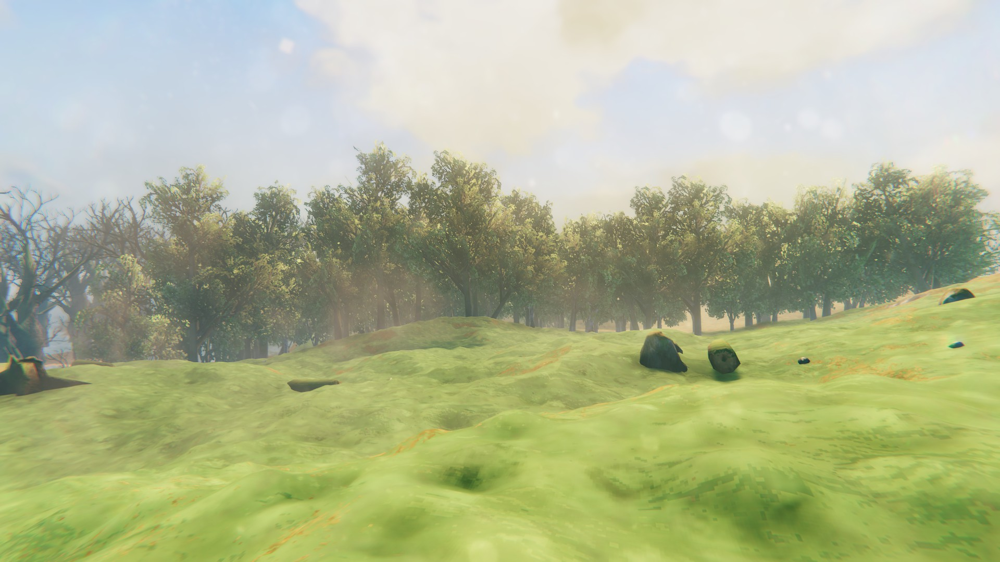
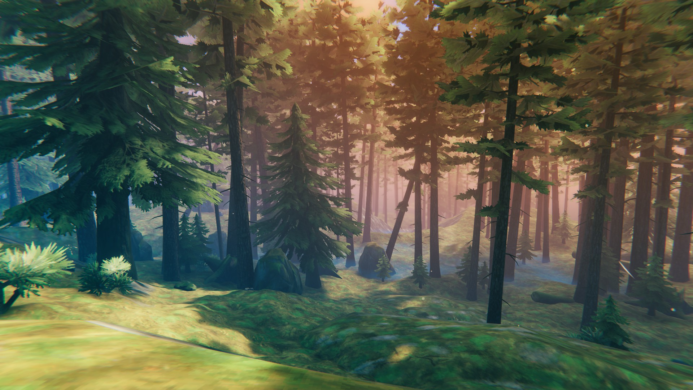
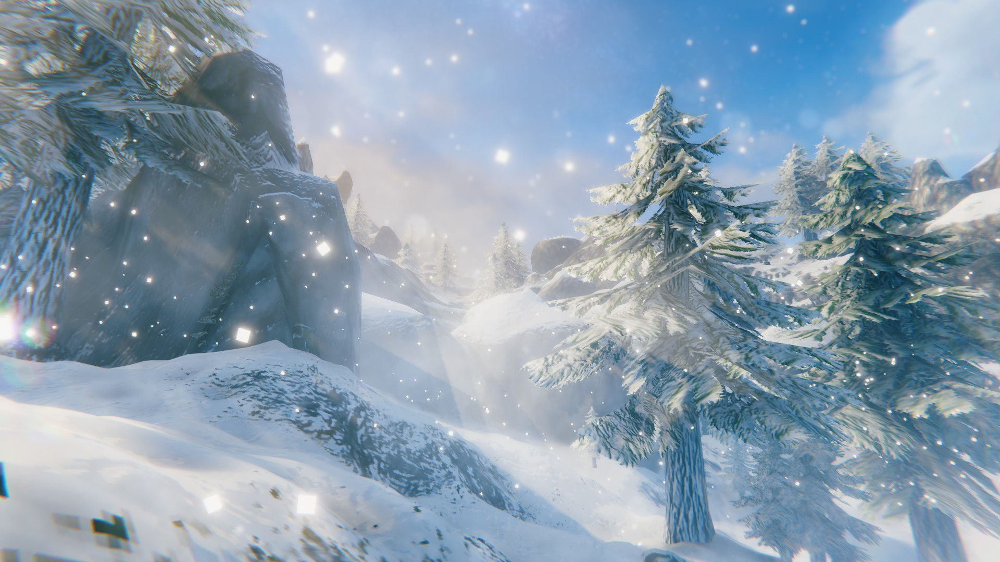

BIOME GUIDE
On this page you will find the different biomes with warnings, descriptions, common wildlife, common enimies, materials from plants to ores, and larger bosses.
MEADOWS
WARNING: After defeating bosses, new enemies will spawn that correlate to that biome's normal enemies
Wildlife:
deer, gull, boar
Materials:
Beech trees, Birch trees, Oak trees, Stone, Flint, Dandelion
Enemies:
Greylings, Necks, Draugrs
Boss:
Eikthyr
BLACK FOREST
WARNING: Periodically the screen will begin to shake, when this happens it means that a troll has found you and is heading your way.
Wildlife:
Deer, Crow, Gull
Materials:
Copper Ore, Tin Ore, Thistle, Carrot Seed
Enemies:
Greydwarfs, Greydwarf brutes, Greydwarf shamans, Trolls, Skeletons
Boss:
The Elder
SWAMP

WARNING: Be extra careful at nights because Wraiths fly around and deal a lot of damage.
Wildlife:
None
Materials:
Ancient bark, Scrap iron, Guck, Thistle, Turnip seeds
Enemies:
Blobs, Oozer, Draugrs, Draugr elites, Leeches, Skeletons, Surtlings, Wraiths, Abomination
Boss:
Bonemass
MOUNTAINS
WARNING: Mountain biomes are perpetually cold and will cause the player damage over time. This can be overcome through the use of certain clothing or by drinking frost resistance mead.
Wildlife:
None
Materials:
Obsidian, Dragon egg, Silver ore, Onion seeds
Enemies:
Wolfs, Drakes, Stone golems, Fenrings, Draugrs, Skeletons, Bats, Ulves, Cultists
Boss:
Moder
PLAINS

WARNING: Everything in the Plains can and will kill you. Deathsquitos are particularly annoying because they have a very large radius in which they will detect you. The best defense against them is by blocking their attack with a shield and then hitting them.
Wildlife:
Gulls
Materials:
Cloudberries, Flax, Barley, Tar
Enemies:
Fulings, Fuling Berserkers, Fuling Shamans, Lox, Deathsquitoes, Growthes
Boss:
Yagluth
OCEANS

WARNING: When sailing remember that boats aren't indestructible and your ship breaking mid sailing adventure is certain death because you will run out of stamina before you make land. To avoid this periodically stop in meadows biomes and build a workbench to repair your vessel.
Wildlife:
Fish, Leviathan
Materials:
Chitin
Enemies:
Serpent